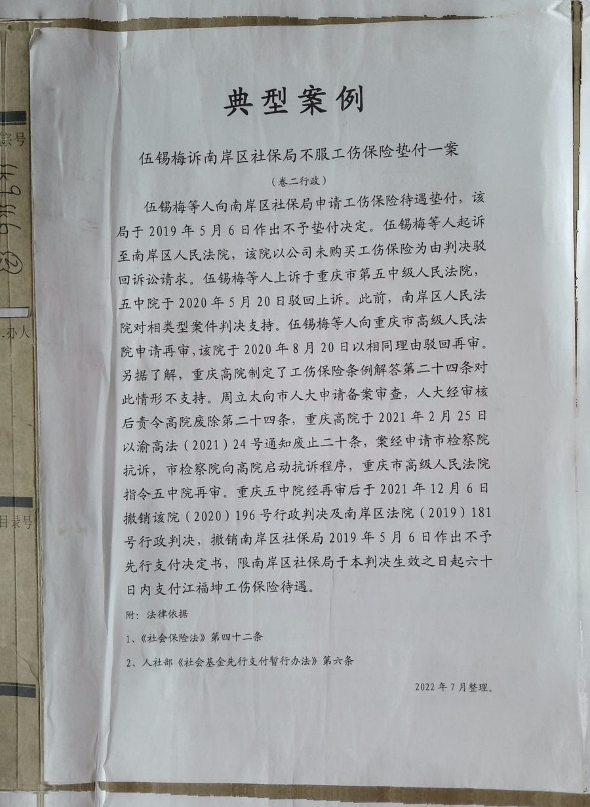
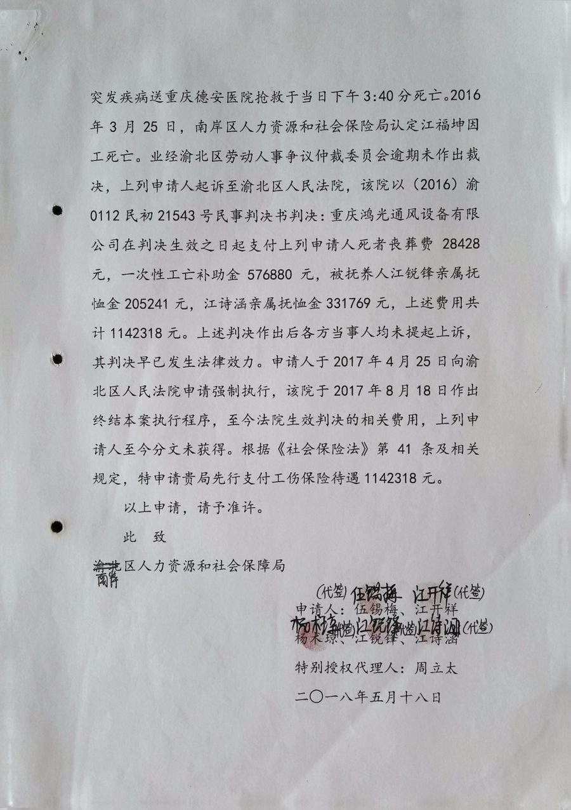
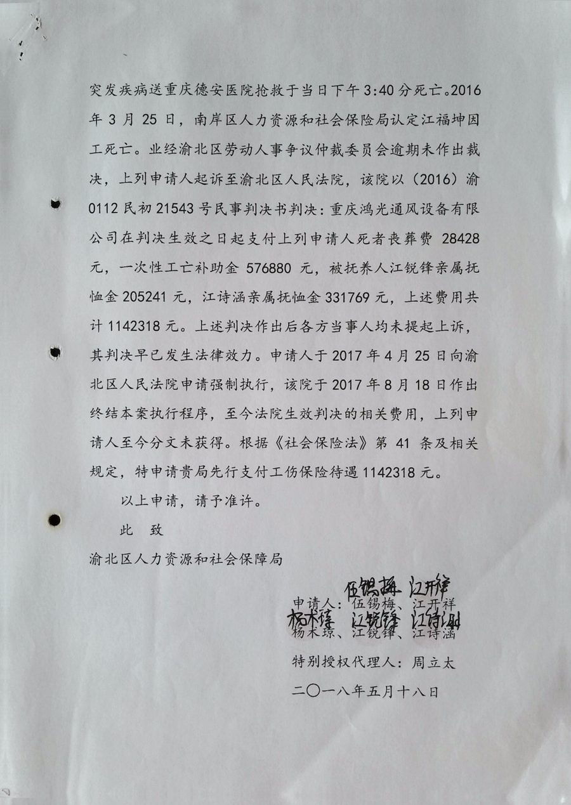
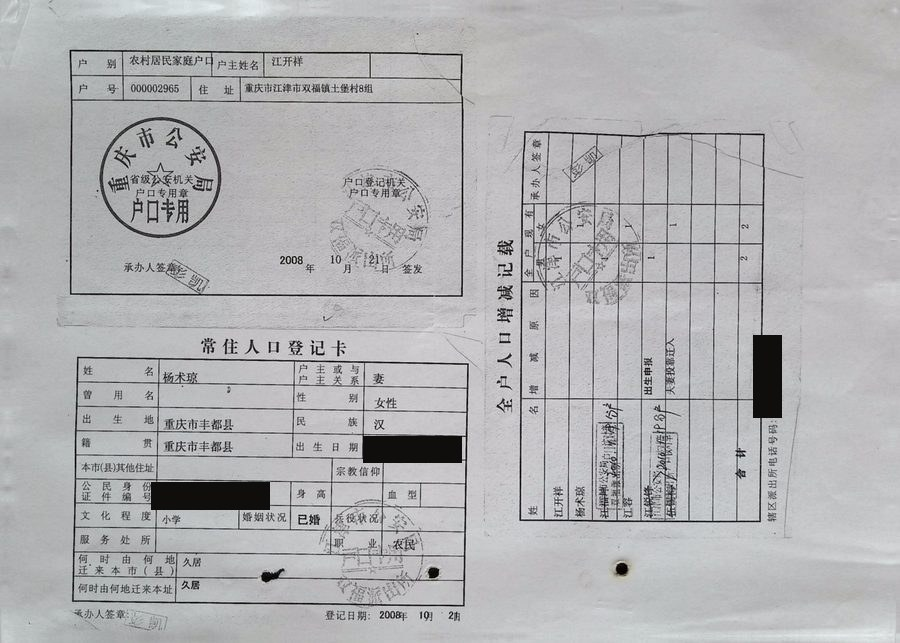

依据典型案例汇编（档案 CS-0020）与卷宗 OCR（CASE-0002）整理。
2015 年 10 月 27 日下午，重庆鸿光通风设备有限公司员工江福坤在工地上突发疾病，抢救无效于当日 15 时 30 分死亡。2016 年 3 月，南岸区人社局认定为因工死亡。此后是漫长的程序：工伤认定行政诉讼一审、二审，工伤保险待遇劳动仲裁、民事一审、二审——2018 年前后，法院判决公司赔偿伍锡梅等人一次性死亡赔偿金等费用 1,142,318 元。
判决生效，公司注销。赔偿无法执行。2018 年 11 月 22 日，伍锡梅向南岸区社保局申请工伤保险待遇先行支付（《社会保险法》第 41 条：用人单位不支付的，由工伤保险基金先行支付）。2019 年 5 月，社保局作出 (2019)1 号《不予先行支付决定》。此后：区法院不支持、五中院维持、高院不予再审——三道门都关着，门后是同一份文件：重庆市高院 2020 年 1 月《关于审理工伤行政案件若干问题的解答》第 24 条——不应垫付。
周立太的选择是把这份「红头文件」本身变成被告：2020 年 9 月 3 日，他向重庆市人大常委会提出监督申请，主张《解答》第 24 条违反《社会保险法》第 41 条、超越审判机关职权。市人大将情况报告全国人大；全国人大同样认为该条违反社会保险法。重庆市检察院抗诉，高院撤销原判、指定再审。2021 年，重庆高院发布通知，废止《解答》第 24 条。
卷宗 3 卷 369 页完整记录了每一道程序关卡——这是六案中「程序最多」的一卷。
2002 年，深圳中院在陈用刚案里写下「几近不可能」；十八年后，同类困境换了一座城市、多了一层「红头文件」的墙——而墙，最终是被人大监督程序推倒的。个案（判例）与文件（监督），是这条路的两端。
行政卷（241 页）收录先行支付申请与各审级文书；另有 9 份政策/裁判 PDF 直接入卷——法条本身也是证物。




卷宗材料（9 件，含代理词、情况通报、《不予先行支付决定书》、先行支付暂行办法、重庆一中院与市高院裁判、《解答》废止通知）+ 民事卷 128 页 + 行政卷 241 页。
卷内专存《重庆市高级人民法院关于废止〈关于审理工伤行政案件若干问题的解答〉第二十四条的通知》——把「文件之死」的讣告本身装进了卷宗。
全国人大认为该解答第 24 条违反《社会保险法》第 41 条之规定。
本案的启示不止于结果：当个案诉讼被地方司法文件「锁死」，律师转向人大监督程序——个案（判例推动）与监督（文件纠正）构成制度变迁的两条通道。
2002 深圳：终审判社保局垫付 → 推动特区修法；2021 重庆：高院文件废止 → 先行支付通道重开。两案相隔十九年，同一命题：工伤保险基金要不要兜底。
3 卷 369 页全部扫描并 OCR（9 页 PDF 原件直收）。2022 年 7 月由承办方整理，2026 年数字化入馆。
《社会保险法》先行支付制度的地方执行样本：以人大监督纠正违法司法文件，为全国同类「执行不能」案件扫清地方障碍。
本页为档案馆消费层演示页面。OCR 文本均为机器生成、未经人工复核；案件时间线依据典型叙述与卷宗文书归纳，个别程序节点顺序以最终整理为准。